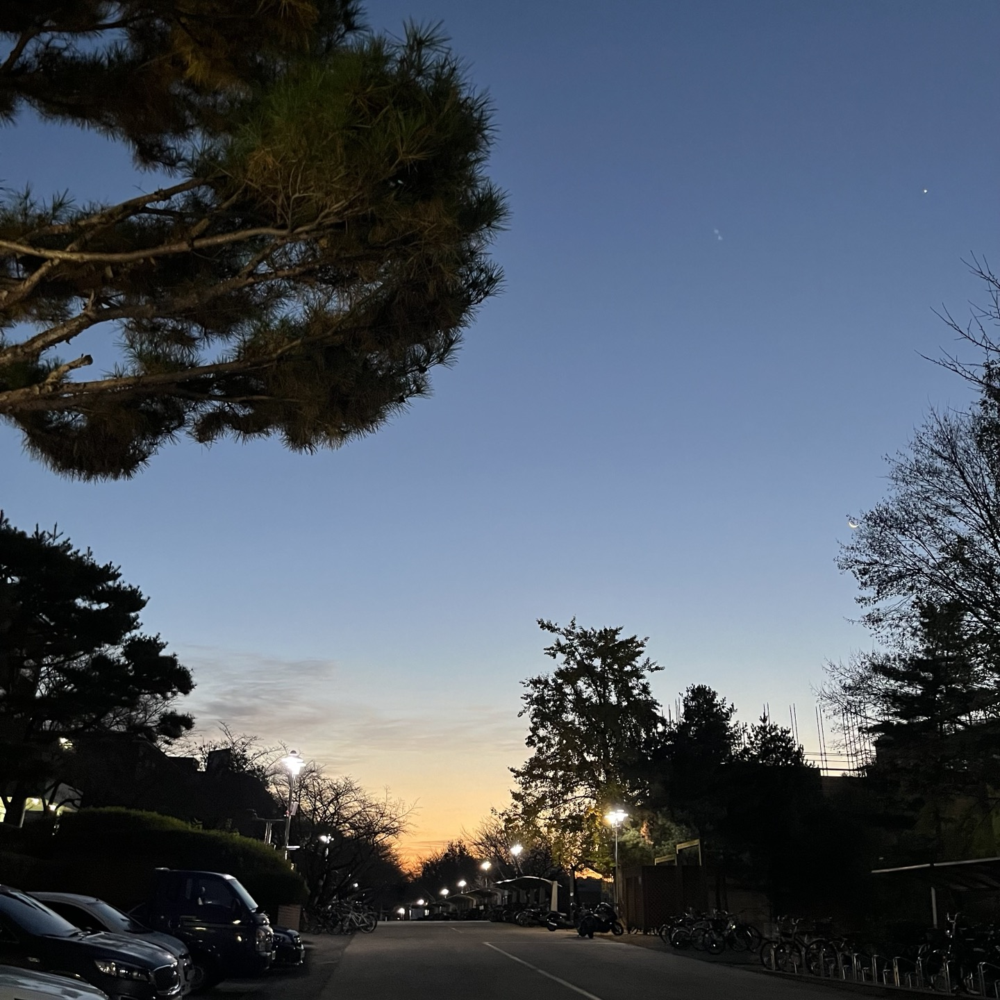
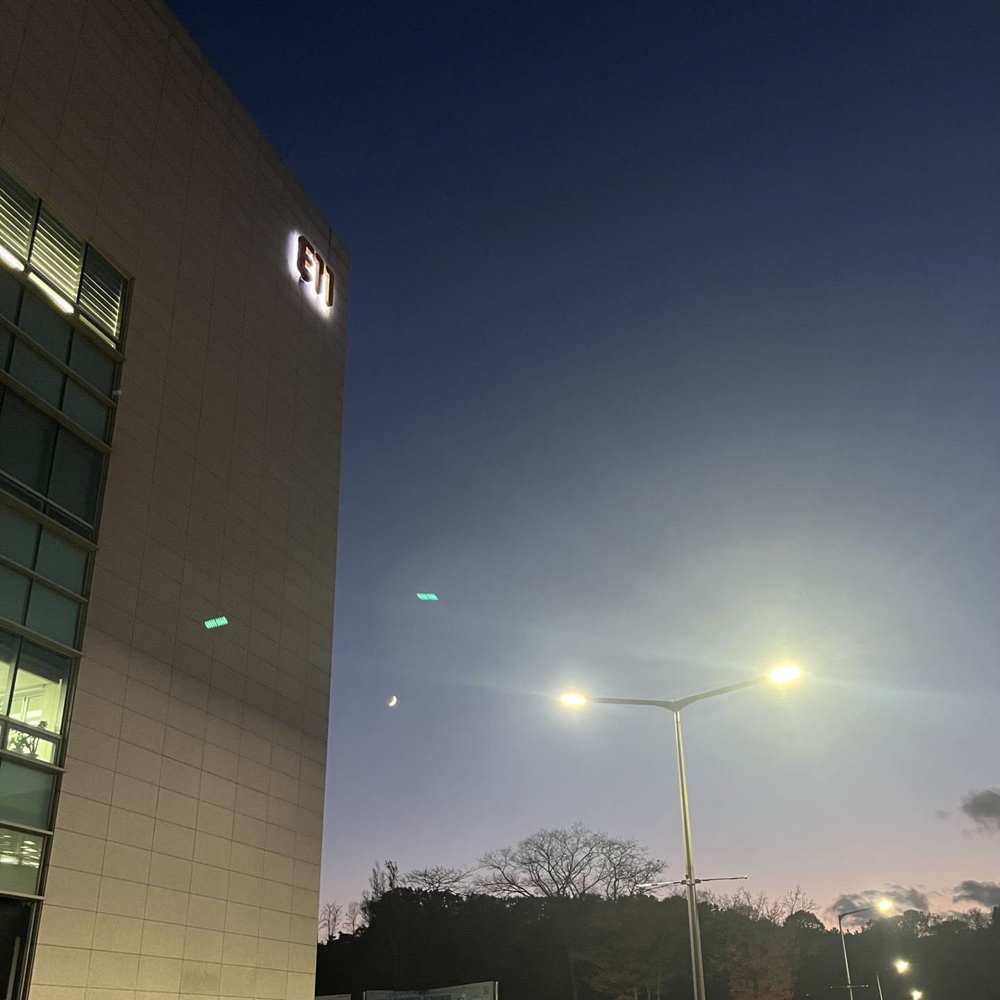
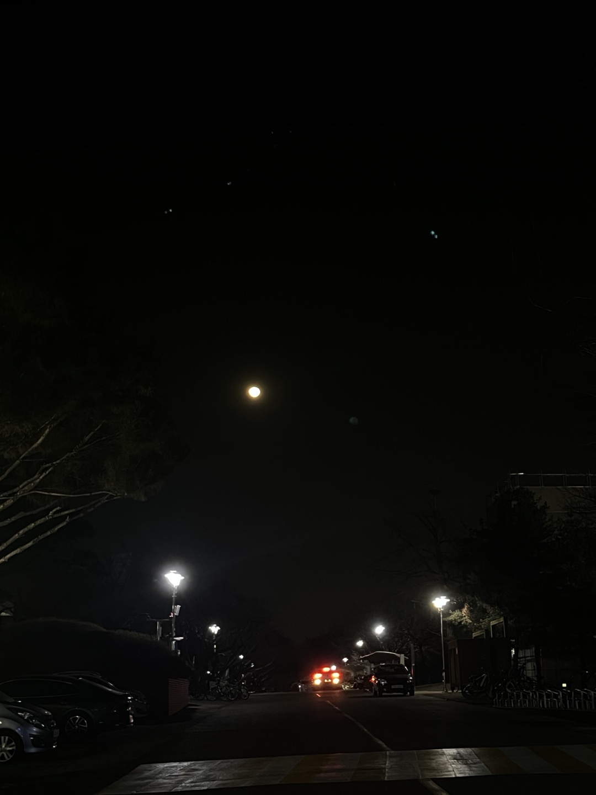

History
카이스트의 숨은 풍경
by 공대생1 2024.01.29
- 
-
카이스트에서 본가로 가기 위해 일찍 눈을 뜬 날에는 아름관에서 해가 뜨는 광경을 볼 수 있다. 카이스트에서 출발하여 대전역까지 가려면 20분 이상 걸리는데, 그 날따라 출근하는 차량들과 안 겹치기 위해 유난히 일찍 기숙사를 나섰다.
해가 뜨는 광경이 꼭 길에 있는 가로등 같았다. 일찍 일어나 힘겨운 하루를 시작하는 사람들에게 힘이 되어주는 것 같았다. - 
-
카이스트에서 기말고사를 마치고 나온 뒤 찍었던 사진이다. 그 당시 홀가분하고 시원한 마음을 갖고 본 하늘이 정말 예뻤다. 해가 지는 시간은 짧아서 더욱 소중하게 느껴진다.
- 
-
이 사진도 본가에서 카이스트로 기차를 타고 온 날 찍은 사진이다. 일부러 카메라가 빛을 받는 정도를 줄여서 (정확한 용어는 모른다) 어둡게 찍어서, 달이 더 빛나도록 찍었다. 눈으로 보는 것만큼 예쁘게 나오지는 않았지만 최대한 그 순간을 담았다.